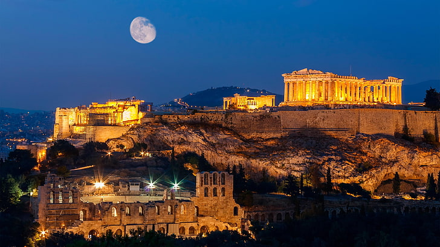
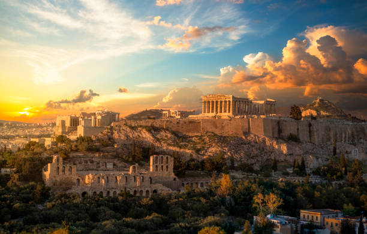
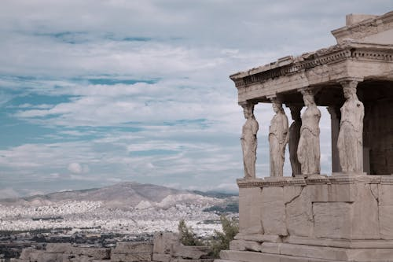
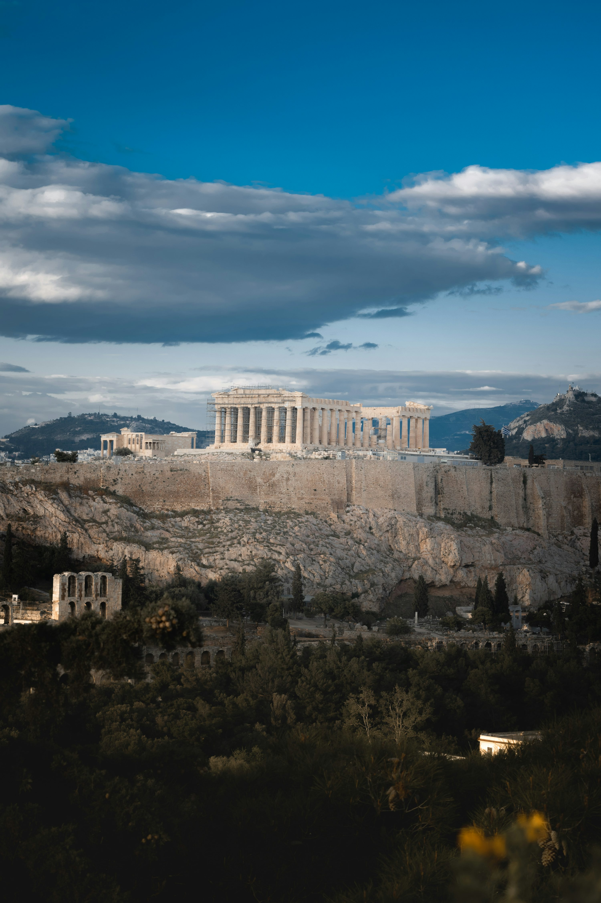
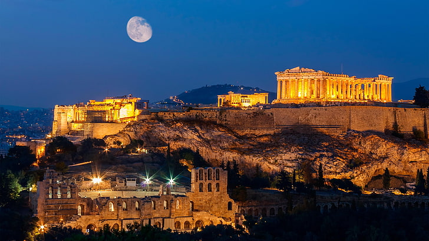
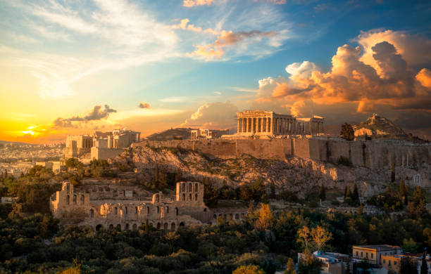
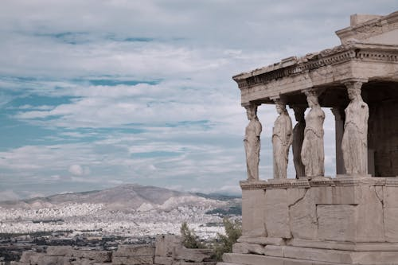
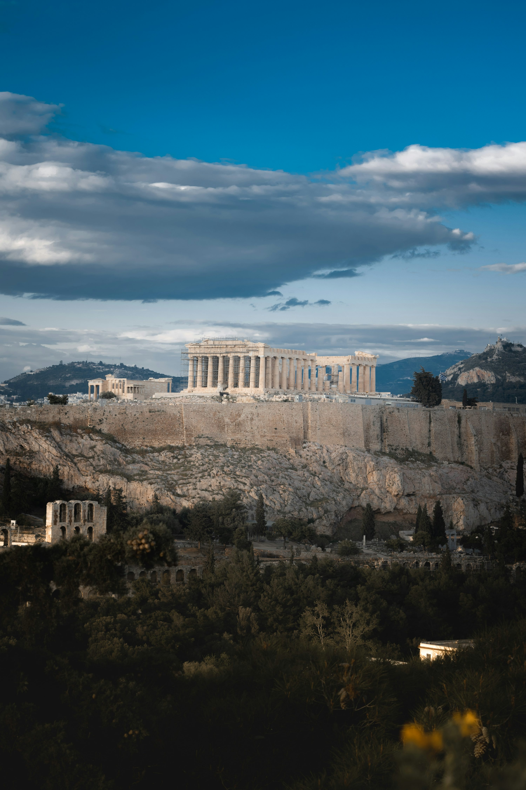
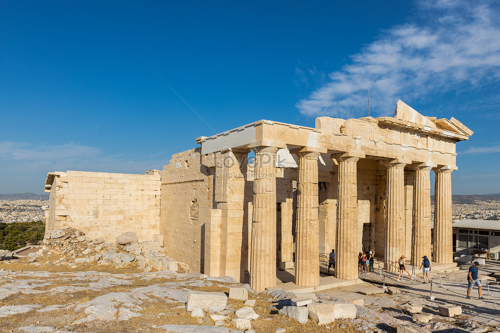
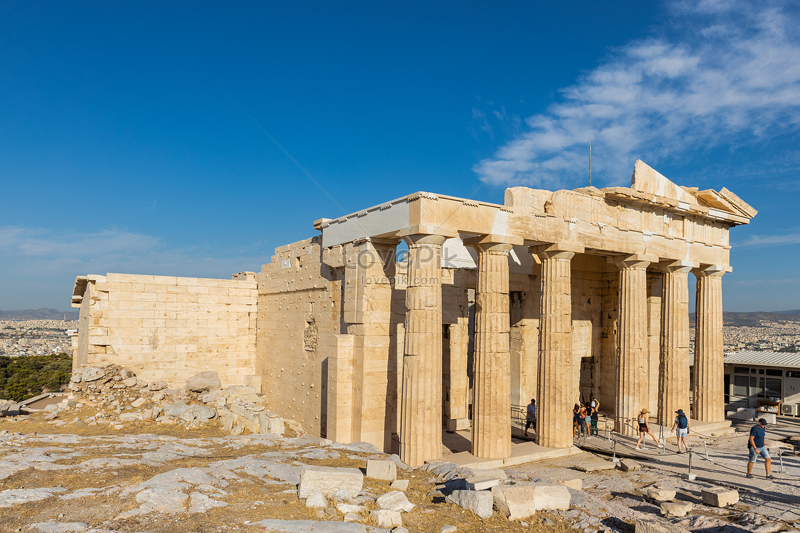

Acropolis Of Athens
architecture Of Classical World
Introduction
The Acropolis of Athens (Ancient Greek: ἡ Ἀκρόπολις τῶν Ἀθηνῶν, romanized: hē Akropolis tōn Athēnōn; Modern Greek: Ακρόπολη Αθηνών, romanized: Akrópoli Athinón) is an ancient citadel located on a rocky outcrop above the city of Athens, Greece, and contains the remains of several ancient buildings of great architectural and historical
.......
s
History
The Acropolis is located on a flattish-topped rock that rises 150 m (490 ft) above sea level in the city of Athens, with a surface area of about 3 ha (7.4 acres). While the earliest artifacts date to the Middle Neolithic era, there have been documented habitations in Attica from the Early Neolithic period (6th millennium BC).There is little doubt that a Mycenaean
.......
s
Archaic Acropolis
Not much is known about the architectural appearance of the Acropolis until the Archaic era. During the 7th and the 6th centuries BC, the site was controlled by Kylon during the failed Kylonian revolt,[11] and twice by Peisistratos; each of these was attempts directed at seizing political power by coups d'état. Apart from the Hekatompedon mentioned later.
Hellenistic and Roman Period
During the Hellenistic and Roman periods, many of the existing buildings in the area of the Acropolis were repaired to remedy damage from age and occasionally war.[31] Monuments to foreign kings were erected, notably those of the Attalid kings of Pergamon Attalos II (in front of the NW corner of the Parthenon), and Eumenes II, in front of the Propylaea.
Byzantine, Latin, and Ottoman Period
During the Byzantine period, the Parthenon was used as a church dedicated to the Virgin Mary. During the Latin Duchy of Athens, the Acropolis functioned as the city's administrative center, with the Parthenon as its cathedral, and the Propylaea as part of the ducal palace.A large tower was added, the Frankopyrgos (Frankish Tower), demolished during the 19th century.
 








 
